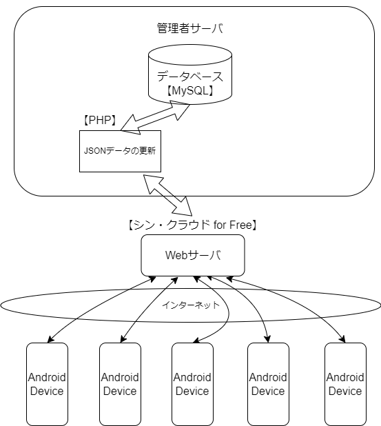
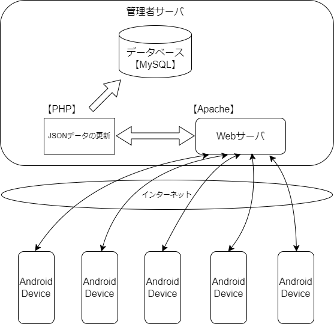
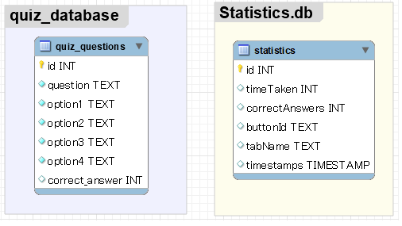

SkillShowcase
アプリの概要
本アプリは、「指をあまり動かさずに楽しめるクイズアプリ」を目指して開発されました。4択の選択肢から指をあまり動かさずに利用できる操作性にこだわりました。
主な機能として、4択クイズ、カウントダウンタイマー、経過時間と正解数を記録し、グラフで集計する機能を備えています。クイズは学習の確認や暇つぶしに最適であり、カウントダウンタイマーは緊張感を得るためのものです。経過時間と正解数のグラフ集計機能により、ユーザーは自分の学習進捗を視覚的に確認できます。
開発背景として、多くのクイズアプリが存在する中で、よりサクサクと回答できるアプリを作りたいという思いから、このアプリを開発しました。
このアプリは、通勤中や休憩時間などの短い時間での使用を想定しています。簡単な操作で素早くクイズを解き、自分の知識を試すことができます。また、長期的に使用することで、学習の進捗をグラフで確認し、モチベーションの維持にも役立ちます。
| 機能 | 機能概要 |
|---|---|
| 4択クイズ | ユーザーは4つの選択肢から1つを選んで回答します。 |
| カウントダウンタイマー | 各クイズには15秒の時間制限があり、緊張感を高めます。 |
| 経過時間と正解数の記録 | ユーザーのクイズ解答時間と正解数を記録し、グラフで進捗を可視化します。 |
4択クイズ機能について
本アプリの4択クイズ機能では、ユーザーが提供された4つの選択肢の中から1つを選んで回答します。選択は以下のルールに従って処理されます：
- 初回クリック：ユーザーが最初に選択した回答が正解か不正解かを判断し、この結果はデータベースに記録されます。この初回のクリックがユーザーの回答としてカウントされ、クイズの成績に影響します。
- 2回目以降のクリック：初回の回答後、ユーザーが他の選択肢をクリックしても、これらのクリックは成績の計算には関与しません。これにより、ユーザーは自分の選んだ回答に自信が持てない場合に、他の選択肢を試してみることができますが、成績には影響しません。
- 問題の進行：ユーザーが正解の選択肢をクリックした後、さらに任意の選択肢をクリックすることで次の問題へと進むことができます。正解を確認しないと次の問題に進めないため、正しい知識の習得に役立ちます。
このシステムにより、ユーザーは自分の知識をテストしつつ、学習の進捗をリアルタイムで確認することができます。
画面遷移の紹介
アプリ内の主な画面遷移を下記のリンク先で掲載します。各画面の概要と、その画面でできることを簡単に説明します。
画面遷移マップを見るダウンロード方法
アプリをダウンロードするには、以下のURLからアクセスしてください。
ソースコード
プロジェクトのソースコードを閲覧するには、以下のGitHubリポジトリを訪問してください。
問題データ更新時のネットワーク構成図
初回ダウンロード以降に問題データを更新する場合には、インターネットを通じて更新データをダウンロードしていただきます。この機能は未実装ですが、将来的にユーザーが最新の問題データを容易に取得できるようにする計画です。
Webサーバーをレンタルする場合
レンタルサーバーを使用する場合、サービスプロバイダが提供するサーバー上にWebサイトのデータを配置します。これにより、メンテナンスやセキュリティ対策などの面で利便性が高まります。
自分のPCでWebサーバーを立てる場合
Apacheを使用して自分のPC上にWebサーバーを構築する場合、フルコントロールが可能ですが、セキュリティの設定や電力供給などの面で自己管理が必要になります。
ER図
以下のER図は、異なるデータベースに格納されたテーブルを示しており、各データベースが特定の機能に特化し、独立してデータを管理しています。
テーブルがそれぞれ独立しているため、今回のER図にはテーブル間の関連性を示す線がありません。
quiz_database: このデータベースは問題文と選択肢、正答を管理しています。
Statistics.db: このデータベースはクイズに関する統計情報を管理するために特化しています。回答にかかった時間と正解数で、ユーザーのパフォーマンスを追跡し、分析するための情報を保持します。
テーブルの説明
quiz_questions: 問題テーブル
| 項目名 | 型 | 説明 |
|---|---|---|
| id | INT | タブ名とボタンIDから決められる一意の識別子 |
| question | TEXT | 問題文のテキスト |
| option1 | TEXT | 選択肢1のテキスト |
| option2 | TEXT | 選択肢2のテキスト |
| option3 | TEXT | 選択肢3のテキスト |
| option4 | TEXT | 選択肢4のテキスト |
| correct_answer | INT | 正答ボタンのID |
statistics: 統計テーブル
| 項目名 | 型 | 説明 |
|---|---|---|
| id | INT | レコードを特定するための一意の識別子 |
| timeTaken | INT | ボタンに含まれる問題データを解き終わるまでの経過時間 |
| correctAnswers | INT | 初回の選択で正解した回数 |
| buttonId | TEXT | メイン画面で選択されたボタンのID |
| tabName | TEXT | メイン画面で選択されたタブの名前 |
| timestamps | TIMESTAMP | メイン画面のボタンを選択したときの日時 |
quiz_questionsテーブルの操作
テーブルの作成
// アプリのインストール時に一回だけ行われるメソッド
// もう一度行いたい場合は、アンインストールしてから再度インストールする。
@Override
public void onCreate(SQLiteDatabase db) {
// クイズデータを格納するためのテーブルを作成
String CREATE_QUIZ_TABLE =
"CREATE TABLE quiz_questions (" +
"id INTEGER PRIMARY KEY AUTOINCREMENT," +
"question TEXT NOT NULL," +
"option1 TEXT NOT NULL," +
"option2 TEXT NOT NULL," +
"option3 TEXT NOT NULL," +
"option4 TEXT NOT NULL," +
"correct_answer INTEGER)";
db.execSQL(CREATE_QUIZ_TABLE);
// JSONファイルから初期データを挿入
insertInitialData(db);
}データの挿入
// 初期データをデータベースに挿入するメソッド
private void insertInitialData(SQLiteDatabase db) {
try {
// JSONファイルを読み込む
InputStream is = context.getAssets().open("initial_data.json");
// BufferReaderを使って、ファイル内容を文字列として読み込む
BufferedReader reader = new BufferedReader(new InputStreamReader(is));
StringBuilder sb = new StringBuilder();
String line;
while ((line = reader.readLine()) != null) {
sb.append(line);
}
// 読み込んだ文字列をJSONArrayインスタンスに変換して、
// JSON配列の各要素にアクセスできるようにする。
JSONArray jsonArray = new JSONArray(sb.toString());
// 問題文と選択肢、正解の要素番号を取得する。
for (int i = 0; i < jsonArray.length(); i++) {
JSONObject jsonObject = jsonArray.getJSONObject(i);
String question = jsonObject.getString("question");
JSONArray choices = jsonObject.getJSONArray("choices");
int correctAnswer = jsonObject.getInt("correct_answer");
// データベースに挿入
ContentValues values = new ContentValues();
values.put("question", question);
for (int j = 0; j < choices.length(); j++) {
values.put("option" + (j + 1), choices.getString(j));
}
values.put("correct_answer", correctAnswer);
db.insert("quiz_questions", null, values);
}
} catch (
IOException |
JSONException e) {
Log.e("MyApp", "insertInitialDataでエラーが発生しました。");
e.printStackTrace();
}
}データのクエリ
// 検索クエリに基づいてデータベースから質問を検索するメソッド
// 問題文に基づいてデータを検索
public List searchQuizQuestions(String query) {
List matchedQuestions = new ArrayList<>();
SQLiteDatabase db = this.getReadableDatabase();
Cursor cursor = db.rawQuery("SELECT * FROM quiz_questions WHERE question LIKE ?", new String[]{"%" + query + "%"});
if (cursor.moveToFirst()) {
do {
int questionColumnIndex = cursor.getColumnIndex("question");
if (questionColumnIndex != -1) {
String questionText = cursor.getString(questionColumnIndex);
List choices = new ArrayList<>();
for (int i = 1; i <= 4; i++) {
int choiceColumnIndex = cursor.getColumnIndex("option" + i);
if (choiceColumnIndex != -1) {
choices.add(cursor.getString(choiceColumnIndex));
}
}
int correctAnswerColumnIndex = cursor.getColumnIndex("correct_answer");
if (correctAnswerColumnIndex != -1) {
int correctAnswer = cursor.getInt(correctAnswerColumnIndex);
matchedQuestions.add(new Data_Quiz(questionText, choices, correctAnswer));
}
}
} while (cursor.moveToNext());
}
cursor.close();
return matchedQuestions;
} データベースの更新
// データベースをバージョンアップしたときに、テーブルを再作成
@Override
public void onUpgrade(SQLiteDatabase db, int oldVersion, int newVersion) {
if (db != null) {
db.execSQL("DROP TABLE IF EXISTS quiz_questions");
super.onOpen(db);
}
}statisticsテーブルの操作
private static final String DATABASE_NAME = "Statistics.db";// データベース名
private static final String TABLE_NAME = "statistics"; //テーブル名
private static final String COLUMN_ID = "id";
private static final String COLUMN_TIME_TAKEN = "timeTaken"; //経過時間
private static final String COLUMN_CORRECT_ANSWERS = "correctAnswers"; //正答数
private static final String COLUMN_TAB_NAME = "tabName"; //選択されたタブ名
private static final String COLUMN_BUTTON_ID = "buttonId"; //選択されたボタンID
private static final String COLUMN_TIMESTAMP = "timestamps"; //各レコードがいつ追加されたかを記録するためのカラム(列)
テーブルの作成
// statisticsテーブルの作成
public void onCreate(SQLiteDatabase db) {
String CREATE_STATISTICS_TABLE = "CREATE TABLE " + TABLE_NAME + "("
+ COLUMN_ID + " INTEGER PRIMARY KEY AUTOINCREMENT,"
+ COLUMN_TIME_TAKEN + " INTEGER,"
+ COLUMN_CORRECT_ANSWERS + " INTEGER,"
+ COLUMN_BUTTON_ID + " TEXT,"
+ COLUMN_TAB_NAME + " TEXT,"
+ COLUMN_TIMESTAMP + " TIMESTAMP DEFAULT CURRENT_TIMESTAMP"
+ ")";
db.execSQL(CREATE_STATISTICS_TABLE);
}データの挿入
//クイズ完了時に統計データを挿入
public void addStatistics(int timeTaken, int correctAnswers, String buttonId, String tabName) {
SQLiteDatabase db = this.getWritableDatabase();
// 既存のレコード数をチェック
Cursor cursor = db.rawQuery("SELECT COUNT(*) FROM " + TABLE_NAME, null);
int count = 0;
if (cursor.moveToFirst()) {
count = cursor.getInt(0);
}
cursor.close();
// レコード数が10を超えていれば、最も古いレコードを削除
if (count >= 10) {
db.execSQL("DELETE FROM " + TABLE_NAME + " " +
"WHERE " + COLUMN_ID +
" IN (SELECT " + COLUMN_ID +
" FROM " + TABLE_NAME +
" ORDER BY " + COLUMN_TIMESTAMP +
" ASC LIMIT " + (count - 9) + ")");
}
// 新しい統計データを挿入
ContentValues values = new ContentValues();
values.put(COLUMN_TIME_TAKEN, timeTaken); // 経過時間
values.put(COLUMN_CORRECT_ANSWERS, correctAnswers); // 正答数
values.put(COLUMN_BUTTON_ID, buttonId); // 選択されたボタンID
values.put(COLUMN_TAB_NAME, tabName); // 選択されたタブ名
try {
db.insert(TABLE_NAME, null, values);
} catch (Exception e) {
// 例外が発生した場合の処理
Log.e("Database", "Error while adding statistics", e);
} finally {
if (db != null) {
db.close();
}
}
}データのクエリ
// tabNameとbuttonIdに基づいて統計データを取得するメソッド
public Cursor getStatisticsForButtonAndTab(String buttonId, String tabName, int limit) {
SQLiteDatabase db = this.getReadableDatabase();
// SQLクエリを直接記述
String rawQuery = "SELECT * FROM " + TABLE_NAME +
" WHERE " + COLUMN_BUTTON_ID + " = ? AND " + COLUMN_TAB_NAME + " = ?" +
// COLUMN_BUTTON_IDと COLUMN_TAB_NAMEという2つのカラムに基づいて、フィルターをかけるための条件を設定
// ?はプレースホルダーと呼ぶ。
" ORDER BY " + COLUMN_TIMESTAMP + " ASC" +
" LIMIT " + limit; // 最新のデータから順にlimit件分取得する
// selectionArgs配列を用意して、SQLインジェクションを防ぐ
String[] selectionArgs = new String[] { buttonId, tabName };
// rawQueryメソッドを使用してクエリを実行し、Cursorを返す
return db.rawQuery(rawQuery, selectionArgs);
}データベースの更新
// バージョンが変わった場合、既存のテーブルを削除後、再度テーブルを作成
@Override
public void onUpgrade(SQLiteDatabase db, int oldVersion, int newVersion) {
db.execSQL("DROP TABLE IF EXISTS " + TABLE_NAME);
onCreate(db);
}